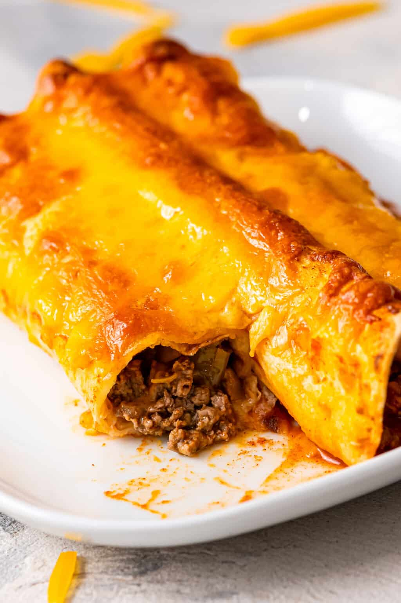

Beef-Enchiladas

Description
This a very savory dish including choice beef rolled in homemade flour tortillas, coated in a spicy red tomato sauce.
Ingredients
- Tortilla dough
- Red Sauce
- Choice ground beef
- Mozzarella and Colby Jack cheese shredded
Steps
- Roll dough into flat workable size, about 1/4 inch thick
- Add meat to each tortilla and roll lightly and place into well greased, oven safe baking dish
- Top with sauce and blend of mozzarella and colby jack cheeses
- Bake for 40 minutes at 400 degrees and enjoy!